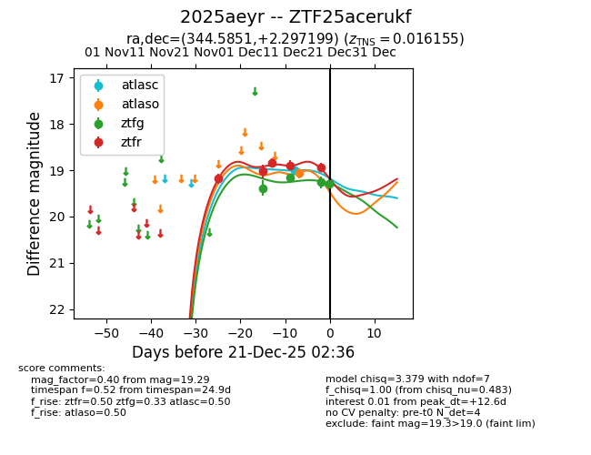
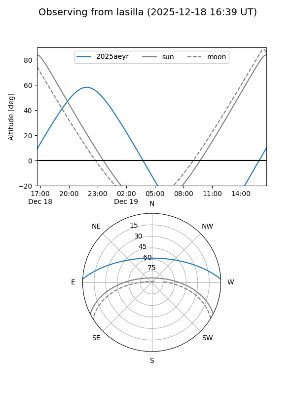
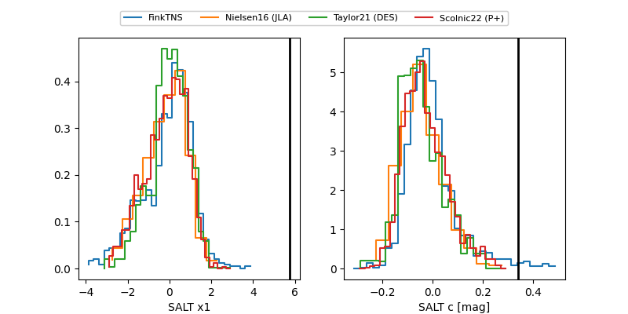

2025aeyr
Target 2025aeyr at 2025-12-20 10:45
Aliases and brokers:
FINK: fink-portal.org/ZTF25acerukf
Lasair: lasair-ztf.lsst.ac.uk/objects/ZTF25acerukf
ALeRCE: alerce.online/object/ZTF25acerukf
TNS: wis-tns.org/object/2025aeyr
YSE: ziggy.ucolick.org/yse/transient_detail/2025aeyr
alt names
ZTF25acerukf (ztf,fink_ztf)
2025aeyr (tns,yse)
Coordinates:
equatorial (ra, dec) = 344.5851,+2.29720
equatorial (HMS+DMS) = 22:58:20.41,+02:17:49.92
galactic (l, b) = (75.6429,-49.89770)
Flags:
Photometry:
last atlasc=19.00, atlaso=19.07, ztfg=19.26, ztfr=18.94
1 atlasc, 1 atlaso, 3 ztfg, 5 ztfr detections
Lightcurve

Visibility


Additional plots
